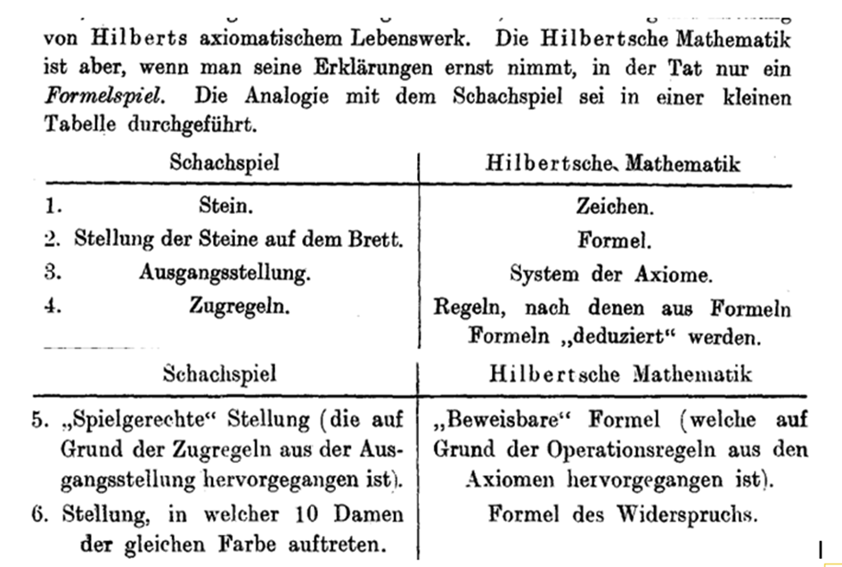

Renaissance der Schachanalogien
In den Diskussionen um die Zweite Krise der Mathematik erlebte die Schachanalogie eine Wiedergeburt. Es folgt ein kleiner historischer Abriss über die Geschichte der Schachanalogie und am Ende auch die jüngeren Beiträge (aus 2025-2026) im Kontext von KI.
Inhalt
- 1893 · Binet über Blindschach und Kopfrechnen
- 1898–1903 · Die Arithmetik als Spiel mit Zeichen
- 1903 · Frege über die Regeln des Rechenspiels
- 1903 · Woran erkennt man, was ein Zeichen bedeutet?
- 1903 · Vom Läufer zur Division durch null
- 1905–1908 · Erlaubter Zug und Plan der Partie
- 1924 · Weyls Schachbrett für Hilberts Metamathematik
- 1940–1945 · Was Schach über einen Beweis verrät
- 1957–2012 · Können Maschinen beweisen?
- 2019–2022 · Was Menschen von Engines lernen
- 2022–2025 · Vom Spielbaum zum Beweisbaum
- April bis Juli 2026 · Ist Mathematik ein Spiel?
- August und September 2026 · Was wäre ein „Schachmatt“ in der Mathematik?
- September 2026 · Vom Enginezug zum Maschinenbeweis
- September und Oktober 2026 · Wer findet den besseren Beweis?
- November 2026 · Was bleibt dem Mathematiker?
- Bücher
1893 · Binet über Blindschach und Kopfrechnen
Was haben Schach und Kopfrechnen gemeinsam?
Fast alle befragten Schachspieler hielten sich für ausgezeichnete Kopfrechner
„Cette analyse sommaire laisse supposer qu’il existe une analogie entre le jeu d’échecs et la science des calculs ; l’analogie me paraît réelle. J’ai demandé à un grand nombre de joueurs d’échecs de première force des renseignemens sur leurs aptitudes mathématiques ; la plupart, environ neuf sur dix, m’ont répondu qu’ils sont d’excellens calculateurs mentaux.“
Schach und Mathematik als parallele Linien
„On voit combien il serait difficile de faire la synthèse de ces différens documens ; j’admets, pour ma part, assez volontiers qu’il existe une analogie entre les mathématiques, spécialement entre le calcul mental, — et les échecs, mais ce n’est point une identité d’opérations mentales. M. Arnous de Rivière porte sur la question un jugement intéressant : « Les échecs et les mathématiques, dit-il, sont des lignes parallèles. » En d’autres termes, ces deux genres d’étude ont une direction commune, elles supposent un même goût pour des combinaisons à la fois abstraites et précises, et une forte dose de patience et d’attention.“
Blindschach als Geometrie beweglicher Linien
„La forme des pièces et leur couleur n’importent point, nous dit M. Arnous de Rivière ; dans le jeu sans voir, les principaux élémens qui servent aux combinaisons sont la ligne de direction que doit suivre la pièce et le chiffre de la case où la pièce doit s’arrêter ; le joueur sans voir se donne, dans son esprit, la représentation de lignes mobiles qui s’entre-croisent ; c’est de la géométrie de situation.“
Jules Arnous de Rivière, wiedergegeben von Alfred Binet, 1893, S. 855.
1898–1903 · Die Arithmetik als Spiel mit Zeichen
Der Mathematiker Thomae (1840-1921) vergleicht Rechenregeln in der Mathematik mit den Zugregeln im Schach. Frege (1848-1925) und Poincaré (1854-1912) haben diese Sicht anschließend und wiederholt kritisiert.
1898 · Bei Thomae bestimmen die Regeln den Inhalt der Zahlzeichen
„Die Arithmetik ist nun für die formale Auffassung ein Spiel mit Zeichen, die man wohl leere nennt, womit man sagen will, dass ihnen (im Rechenspiel) kein anderer Inhalt zukommt, als der, der ihnen in Bezug auf ihr Verhalten gegenüber gewissen Verknüpfungsregeln (Spielregeln) beigelegt wird. Aehnlich bedient sich der Schachspieler seiner Figuren, er legt ihnen gewisse Eigenschaften bei, die ihr Verhalten im Spiel bedingen, und die Figuren sind nur das äussere Zeichen für dies Verhalten. Zwischen dem Schachspiel und der Arithmetik findet freilich ein bedeutsamer Unterschied statt. Die Schachspielregeln sind willkürliche, das System der Regeln der Arithmetik ist ein solches, dass die Zahlen mittels einfacher Axiome auf anschauliche Mannichfaltigkeiten bezogen werden können und uns in Folge dessen wesentliche Dienste in der Erkenntnis der Natur leisten.“
(Thomae, 1898, zitiert nach Frege, 1903, § 88, S. 97–98)
1902 · Wie weit trägt das Vorausrechnen ohne Induktion?
„La réponse est aisée maintenant ; un joueur d’échecs peut combiner quatre coups, cinq coups d’avance, mais, si extraordinaire qu’on le suppose, il n’en préparera jamais qu’un nombre fini ; s’il applique ses facultés à l’arithmétique, il ne pourra en apercevoir les vérités générales d’une seule intuition directe ; pour parvenir au plus petit théorème, il ne pourra s’affranchir de l’aide du raisonnement par récurrence parce que c’est un instrument qui permet de passer du fini à l’infini.“
(Poincaré, 1902, Kap. I, § V)
1903 · Warum sich Gleichungen auf die Welt anwenden lassen
„Warum kann man von einer Stellung von Schachfiguren keine Anwendung machen? Offenbar, weil sie keinen Gedanken ausdrückt. Wenn sie das thäte, und wenn einem den Regeln gemässen Schachzuge der Uebergang von einem Gedanken zu einem andern aus jenem folgenden entspräche, dann wären auch Anwendungen des Schachspiels denkbar. Warum kann man von arithmetischen Gleichungen Anwendungen machen? Nur weil sie Gedanken ausdrücken.“
(Frege, 1903, § 91)
Zur Frage der Anwendbarkeit sagt Tymoczko kurz und treffend:
„[…] we don’t ask chess players for help in designing bridges.“
(Tymoczko, 1998, Einleitung, S. xiii)
1903 · Frege über die Regeln des Rechenspiels
Der Zug und der Lehrsatz über den Zug
„Wenn sie ein Spiel mit Figuren ist, so giebt es in ihr ebensowenig Lehrsätze und Beweise wie im Schachspiele. Zwar kann es Lehrsätze in einer Theorie des Schachspiels geben, aber nicht im Schachspiele selbst. Die formale Arithmetik kennt nur Regeln. Aber es ist auch eine Theorie der formalen Arithmetik denkbar; und in ihr wird es Lehrsätze geben, die z. B. besagen, dass man von einer gewissen Figurengruppe aus gemäss den Spielregeln zu einer andern Figurengruppe gelangen könne.“
(Frege, 1903, § 93)
Was geschieht mit alten Sätzen bei neuen Figuren?
„Durch die Einführung neuer Figuren kann ja sowohl manches früher Unmögliche möglich werden, als auch umgekehrt manches früher Mögliche unmöglich. Beim Schachspiele wenigstens würde die Anwesenheit neuer Figuren manche Züge hindern können. Dass dergleichen in der Arithmetik nicht vorkomme, muss erst bewiesen werden, ehe man die Möglichkeit einer Theorie dieses Rechenspieles als sicher annehmen darf.“
(Frege, 1903, § 93)
Was bezeichnet der schwarze König?
„Kann man sagen, dass den Schachfiguren in Bezug auf ihr Verhalten gegenüber den Regeln des Schachspieles ein Inhalt beigelegt werde? Dass die Schachfiguren da sind, erkenne ich an, ebenso auch, dass Regeln für ihre Handhabung aufgestellt sind; aber von einem Inhalte weiss ich nichts. Man kann doch nicht sagen, dass der schwarze König infolge dieser Regeln etwas bezeichne, etwa wie der Name „Sirius“ einen gewissen Fixstern bezeichnet. Sondern die sachgemässe Ausdrucksweise ist doch wohl die, dass die Regeln des Schachspieles auch vom schwarzen Könige handeln.“
(Frege, 1903, § 95)
Acht Bauern und die vielen Einsen
„Wir dürfen nicht die weissen Bauernfiguren auf dem Schachbrette als eine einzige Figur behandeln. Wir dürfen bei der Aufstellung der Regeln des Schachspiels und in der Theorie das Wort „Bauer“ nicht mit dem bestimmten Artikel im Singular als Eigennamen gebrauchen; denn es giebt mehre. Während in der inhaltlichen Arithmetik Ausdrücke wie „die Zahl Eins“ oder „die Eins“ oder auch einfach „Eins“ als Eigennamen erlaubt sind, sind solche in der Theorie der formalen Arithmetik zu verwerfen; denn es giebt sehr viele Einsfiguren. Immer werden neue gebildet und alte zerstört.“
(Frege, 1903, § 100)
1903 · Woran erkennt man, was ein Zeichen bedeutet?
Kann eine Stellung eine Regel mitteilen?
„Was würde jemand sagen, der nach den Regeln des Schachspiels gefragt hätte, und dem statt aller Antwort eine Gruppe von Schachfiguren auf dem Schachbrette gezeigt würde? Wahrscheinlich, dass er keine Regel darin finden könnte, weil er gar keinen Sinn mit diesen Figuren und mit ihrer Zusammenstellung verbände.“
(Frege, 1903, § 106)
Die doppelte Rolle des Gleichheitszeichens
„Auch hier müssen wir erstens Regeln über die Handhabung der Figuren im Spiele selbst haben, und diese können ganz willkührlich ohne Rücksicht auf irgendeinen Sinn aufgestellt werden. Wir müssen dann zweitens Regeln haben, nach denen wir in der Theorie des Spiels diese selben Figuren als Zeichen zu behandeln haben; und diese können nicht willkührlich sein, sondern müssen sich nach dem Sinne richten, den diese Zeichen in der Theorie des Spiels durch ihre Zusammenstellungen ausdrücken. Nun ist es ein grosser Fehler, dass zwischen diesen beiden Systemen von Regeln garnicht unterschieden wird, sondern dass ohne Versuch eines Beweises ihre Uebereinstimmung vorausgesetzt wird.“
(Frege, 1903, § 109)
Was unterscheidet die Zwei von der Drei?
„Wenn wir die Thomaeschen Regeln oder die von uns dafür aufgestellte Regel mit denen des Schachspiels vergleichen, so fällt uns auf, dass sie von allen Zahlfiguren ohne Unterschied handeln, während im Schach von den Bauern andere Regeln gelten als von den Springern. Gäbe es keine andere Regeln in der formalen Arithmetik, so hätte es keinen Zweck, verschieden gestaltete Zahlfiguren zu gebrauchen. Wenn alle Regeln, die von den Zweifiguren handeln, ebenso von den Dreifiguren gelten sollten und umgekehrt, so hätte die Unterscheidung dieser Gestalten keinen Zweck. Wenn im Schach alle Figuren wie Bauern gehandhabt werden sollten, so könnten sie auch alle wie Bauern gestaltet sein.“
(Frege, 1903, § 111)
Womit rechnet man nach der Subtraktion weiter?
„Man zieht ja auch im Schachspiele mit den Figuren selbst, nicht mit einem gewissen Etwas, das allen schwarzen Bauernfiguren etwa gemeinsam wäre. Was von der Subtraction gesagt ist, kann im Wesentlichen auf die Division übertragen werden.“
(Frege, 1903, § 112)
1903 · Vom Läufer zur Division durch null
Erlauben Thomaes Rechenregeln die Division durch null?
„Was will nun Thomae eigentlich damit sagen, dass er einem Quotienten mit dem Nenner Null jede Bedeutung abspricht? Doch wohl, dass eine Figurengruppe, in der eine Nullfigur rechts von einem Doppelpunkte oder unter einem Bruchstriche steht, unzulässig sei. Soll damit nun gesagt sein, dass die Regeln des Rechenspiels die Erlaubnis dazu nicht geben? oder dass sie es gradezu verbieten? Im ersten Falle hätten wir einen Satz aus der Theorie des Spiels, etwa vergleichbar dem Satze beim Schach, dass ein Läufer, der auf einem weissen Felde steht, nicht auf ein schwarzes gelangen kann. Dem steht kein Verbot entgegen, aber die Erlaubnis, die für seine Bewegungen gegeben ist, reicht nicht hin, es möglich zu machen. Nun haben wir aber eine Thomaesche Regel, die das Auftreten einer solchen Figurengruppe zulässt, welche hier als unzulässig hingestellt wird. Nach dieser Regel ist es nämlich erlaubt, eine Zweifigur zu ersetzen durch die Gruppe »(2 : 0) · 0«.“
(Frege, 1903, § 113, zum Quotienten mit Nenner null)
Können Spielregeln einander widersprechen?
„Ferner muss es auffallen, dass von einer Figur die Widerspruchsfreiheit ausgesagt wird. Es würde seltsam berühren, wenn hinsichtlich einer Schachfigur der Argwohn laut würde, sie könnte einen Widerspruch enthalten. Erinnern wir uns aber an die Thomaesche Ausdrucksweise, wonach der Umstand, dass Regeln unter Anderem von einer gewissen Figur handeln, als Verhalten dieser Figur gegenüber den Regeln erscheint, und wonach nun wieder dies Verhalten als Inhalt der Figur bezeichnet wird, so sehen wir, dass ein Widerstreit, der etwa zwischen den Regeln des Schachspiels obwaltete, in das Innere einer Schachfigur verlegt erschiene. Um also zu einem Verständnisse zu gelangen, werden wir den Widerspruch wieder zurück in die Regeln verlegen müssen.“
(Frege, 1903, § 118)
Wie viele Zahlfiguren braucht eine unendliche Folge?
„Wir erkennen hier das unheilbare Missverhältnis zwischen dem, was die Einführung des Irrationalen erfordert, und dem, was die formale Arithmetik bieten kann. Um das Irrationale einzuführen, brauchen wir unendlich viele Zahlen, und die formale Arithmetik hat von Zahlfiguren nur eine endliche Menge. Daran können alle Definitionen, kann alles Drehen und Wenden nichts ändern.“
(Frege, 1903, § 131)
1905–1908 · Erlaubter Zug und Plan der Partie
Hier werden verschiedene Aspekte des Schachspiels mit der Mathematik verglichen.
1905 · Einen Beweis verstehen heißt, den Plan der Partie erkennen
„Si vous assistez à une partie d’échecs, il ne vous suffira pas, pour comprendre la partie, de savoir les règles de la marche des pièces. Cela vous permettrait seulement de reconnaître que chaque coup a été joué conformément à ces règles et cet avantage aurait vraiment bien peu de prix. C’est pourtant ce que ferait le lecteur d’un livre de Mathématiques, s’il n’était que logicien. Comprendre la partie, c’est tout autre chose ; c’est savoir pourquoi le joueur avance telle pièce plutôt que telle autre qu’il aurait pu faire mouvoir sans violer les règles du jeu. C’est apercevoir la raison intime qui fait de cette série de coups successifs une sorte de tout organisé. À plus forte raison, cette faculté est-elle nécessaire au joueur lui-même, c’est-à-dire à l’inventeur.“
(Poincaré, 1905, Teil I, Kap. I, § V)
1906 · Thomae über den Inhalt der Figuren
„Die Schachfiguren sind Zeichen, denen im Spiel kein anderer Inhalt zukommt, als der ihnen durch die Spielregeln zugeteilt wird.“
1908 · Poincaré über die Wahl einer Konstruktion
„Les règles de la parfaite logique sont-elles toute la mathématique ? Autant dire que tout l’art du joueur d’échecs se réduit aux règles de la marche des pièces. Parmi toutes les constructions que l’on peut combiner avec les matériaux fournis par la logique, il faut faire un choix ; le vrai géomètre fait ce choix judicieusement parce qu’il est guidé par un sûr instinct, ou par quelque vague conscience de je ne sais quelle géométrie plus profonde, et plus cachée, qui seule fait le prix de l’édifice construit.“
(Poincaré, 1908, Buch II, Kap. III, § II)
1924 · Weyls Schachbrett für Hilberts Metamathematik
Weyl hat mit einer Schachanalogie die Hilbertsche Metamathematik popularisierend dargestellt.

Warum zehn Damen derselben Farbe unmöglich sind
„Durch die sich im finiten anschaulichen Denken betätigende vollständige Induktion kann man beim Schachspiel ebenso einsehen, daß 10 Damen einer Farbe in einer spielgerechten Stellung unmöglich sind, wie Hilbert beweist (oder zu beweisen sich anschickt), daß die Formel des Widerspruchs keine beweisbare Formel ist. (Man geht dabei natürlich von der Bemerkung aus, daß durch einen spielgerechten Zug die Summe der Anzahlen der Damen und Bauern einer Farbe niemals zunehmen kann.) Das ist Erkenntnis und nicht mehr Spiel; und nur zur Gewinnung dieser einen Erkenntnis wird von Hilbert das inhaltliche Denken benötigt.“
1940–1945 · Was Schach über einen Beweis verrät
Februar 1940 · Was beweist eine erreichte Schachstellung?
„Man könnte sagen: alle möglichen Spielstellungen im Schach können als Sätze aufgefaßt werden, die sagen, sie (selbst) seien mögliche Spielstellungen; oder auch als Prophezeiungen: die Menschen werden diese Stellungen durch Züge erreichen können welche sie übereinstimmend für den Regeln gemäß erklären. Eine so erhaltene Spielstellung ist dann ein bewiesener Satz dieser Art.“
(Wittgenstein, 1984, Teil III, Wortlaut des Manuskripts Ms-117, 176[2])
„Und so sind auch Schachzüge nicht Beweise & Schachstellungen nicht Sätze. Und mathematische Sätze nicht Spielstellungen. Und so sind sie auch nicht Prophezeiungen.“
(Wittgenstein, 1984, Teil III, Wortlaut des Manuskripts Ms-117, 177[1])
1940 · Hardys Gambit im Primzahlbeweis
„The proof is by reductio ad absurdum, and reductio ad absurdum, which Euclid loved so much, is one of a mathematician’s finest weapons. It is a far finer gambit than any chess gambit: a chess player may offer the sacrifice of a pawn or even a piece, but a mathematician offers the game.“
(Hardy, 1940, § 12)
1940 · Schachbrett und Tafel als Hilfen für die Vorstellung
„It makes no difference to a chess problem whether the pieces are white and black, or red and green, or whether there are physical ‘pieces’ at all; it is the same problem which an expert carries easily in his head and which we have to reconstruct laboriously with the aid of the board. The board and the pieces are mere devices to stimulate our sluggish imaginations, and are no more essential to the problem than the blackboard and the chalk are to the theorems in a mathematical lecture.“
(Hardy, 1940, § 16)
1945 · Für Hadamard hat jeder Beweis ein Gesicht wie eine Blindpartie
Jede Blindpartie hat für den Spieler ihr eigenes Gesicht. Hadamard kennt das vom Beweisen.
„Similarly, any mathematical argument, however complicated, must appear to me as a unique thing.“
(Hadamard, 1945, S. 65)
1945 · Pólyas scheinbar überflüssiger Springer
Welche Angabe der Aufgabe ist noch ungenutzt?
„In a well-constructed chess problem there is no superfluous piece.“
„The correct solution does certainly use all the pieces, even that apparently superfluous white knight.“
(Pólya, 1945, Abschnitt „Signs of progress“, zwei Sätze aus demselben Absatz)
1957–2012 · Können Maschinen beweisen?
1957/58 · In zehn Jahren soll ein Computer einen neuen Satz beweisen
„That within ten years a digital computer will discover and prove an important new mathematical theorem.“
1965 · Franz liest Hilberts Geometrie als Partie
„Eine Schachpartie entspricht einem Beweis, und die Endstellung, etwa der Sieg, entspricht einem geometrischen Satz, der auf diese Weise bewiesen wurde.“
(Franz, 1965, S. 8–9)
2011 · Der erzwungene Zug in Gowers’ Beweis
Zu jedem a in A sucht Gowers ein b, dessen Äquivalenzklasse a enthält. Weil jedes Element zu sich selbst äquivalent ist, genügt die Wahl b = a.
„Here we are in a position a bit like that of a chess player who has only one move that gets out of check. We know absolutely nothing about elements of A except that a is one of them. So we’d better try a itself.“
Timothy Gowers, Equivalence relations, 30. Oktober 2011, Abschnitt „Finding a proof“, Schritt 6.
2012 · Soll ein Beweisprogramm menschliche Beweiswege nachbilden?
Gowers über Deep Blue und das automatische Beweisen.
„I therefore think that the only way to program a computer to prove theorems is to get it to mimic closely how humans prove theorems.“
Timothy Gowers, Kommentar zu Endre Szemerédi wins the 2012 Abel Prize, Gowers’s Weblog, März 2012.
2019–2022 · Was Menschen von Engines lernen
Januar 2019 · Carlsen fragt sich am Brett, wie AlphaZero spielen würde
„I was thinking at several points during the game: how would AlphaZero have approached this?“
März 2019 · Der Vierfarbensatz und die Frage, ob Weiß den Sieg erzwingen kann
„To me, the proofs of the 4-color theorem are a bit like a proof, if true, that White can win in Chess.“
„I don’t know what insight we would gain from such a proof, other than a sense that our intuition was right in the first place.“
Juni 2019 · Carlsens neuer Stil
„In essence I’ve become a very different player in terms of style than I was a bit earlier and it’s been a great ride.“
Februar 2022 · Elo als Modell für Urteile über die Schwierigkeit von Vermutungen
Venkatesh vergleicht Urteile über Vermutungen mit der Elo-Wertung im Schach.
„I suggest that a similar mechanism, which we could informally call (e) free trade in ideas, is a crucial component of the valuation mechanism in mathematics. I will describe it as a Bayesian process of updating our mental landscape of mathematics and mathematicians as we receive information about it.“
2022–2025 · Vom Spielbaum zum Beweisbaum
Verfahren aus dem Computerschach gehen in die mathematische Beweissuche ein. Ein Beweisschritt kann mehrere Teilziele eröffnen, die alle gelöst werden müssen.
2022 · Von AlphaZeros Zugsuche zur Suche nach Teilbeweisen
„Our approach leverages a new search algorithm, HyperTree Proof Search (HTPS), inspired by the recent success of AlphaZero. Our model learns from previous proof searches through online training, allowing it to generalize to domains far from the training distribution.“
„To write a formal proof, mathematicians typically work with Interactive Theorem Provers (ITPs). The most popular ITPs provide high-level “tactics” that can be applied on an input theorem (e.g. the initial goal) to generate a set of subgoals, with the guarantee that proving all subgoals will result in a proof of the initial goal (reaching an empty set means the tactic solves the goal).“
Lizenz für den zitierten Text: Creative Commons Namensnennung 4.0.
Juli 2024 · AlphaProof bei der Mathematik-Olympiade
AlphaProof verbindet ein Sprachmodell mit dem Lernverfahren von AlphaZero.
„When presented with a problem, AlphaProof generates solution candidates and then proves or disproves them by searching over possible proof steps in Lean.“
August 2024 · Versuch und Irrtum mit einem Beweisprüfer
„The framework of DeepSeek-Prover-V1.5 is designed to establish an AlphaZero-like pipeline for formal theorem proving. The use of expert iteration and synthetic data mirrors the core trial-and-error loop of reinforcement learning, with the compiler oracle serving as the world model to provide environmental supervision.“
Huajian Xin et al., DeepSeek-Prover-V1.5, August 2024, Fassung 1. Originaltext unter CC BY 4.0.
Lizenz für den zitierten Text: Creative Commons Namensnennung 4.0.
August 2025 · Legale Stellungen und beweisbare Sätze
„Let us return to chess for inspiration. It seems meaningless to say that a position p in chess is “true”. But it does make sense to claim that p is legal, in that it arose from a game played according to the rules R.“
„Mathematical truth resides not in theorems but in claims that some sentence is a theorem.“
Lizenz für den zitierten Text: Creative Commons Namensnennung 4.0.
April bis Juli 2026 · Ist Mathematik ein Spiel?
6. April · Avigad über Schachprofis und Mathematikfakultäten
Jeremy Avigad tröstet der Fortbestand des Profischachs wenig. Er fragt, wovon Mathematiker künftig leben sollen.
„[…] we don’t require schoolchildren to play chess from kindergarten through high school, and it’s hard to make a living as a chess tutor.“
Jeremy Avigad, Mathematicians in the Age of AI, 6. April 2026, § 3.
21. April · Hat Mathematik feste Spielregeln und ein Gewinnziel?
„And within mathematics, it's much like things like Go or chess that are closed systems with rules where they can generate their own training data.“
„They are actual games with winners and losers.“
„Who cares if mathematics isn’t an adversarial game—and we are still figuring out the rules.“
David Bessis, The fall of the theorem economy, 21. April 2026, über Hintons Rede.
28. Juni · Wie ein Außerirdischer beweisen soll, dass Weiß gewinnen kann
Bei Aaronson behauptet ein Außerirdischer, Weiß könne den Sieg erzwingen (IP = PSPACE).
„THEN LET US PLAY A DIFFERENT GAME, MATHEMATICALLY EQUIVALENT TO CHESS, INVOLVING SUMS OF POLYNOMIALS OVER A FINITE FIELD. IN THIS TRANSFORMED GAME, THE BEST YOU CAN DO IS TO MOVE RANDOMLY.“
27. Juli · Woran erkennt man die Hilfe einer KI im Beweis?
Im Turnier lässt sich die Engine ausschließen. Wie erkennt man in der Forschung die Herkunft einer Idee?
„It is unclear to me if it is even possible to make such a clean distinction in research.“
Anonymer Kommentar zu Thoughts about the Leiden Declaration, Gowers’s Weblog, 27. Juli 2026.
August und September 2026 · Was wäre ein „Schachmatt“ in der Mathematik?
August · Kann eine KI Ramanujans Vermutung selbst entscheiden?
„So, I am postulating that the threshold which was passed by AlphaZero for chess will fail for mathematics.“
Und wenn das Programm doch Erfolg hätte?
„Since understanding is such an integral part of doing mathematics, we will have to rethink what mathematics is.“
12. August · Castillo-Ramirez fragt, wer den Zug erklärt
„Computer programs discover extraordinary moves, but we still need a human being to explain why those moves are extraordinary. No one stops enjoying a game because a computer could have played it better.“
8. September · Buckmasters Vergleich zwischen Navier–Stokes und Deep Blue
Anlass ist Levent Alpöges Arbeit mit einem Sprachmodell an den Navier–Stokes-Gleichungen.
„This is a a Deep Blue-Kasparov moment. The community needs to have serious and unhurried discussion about where to go from here.“
Tristan Buckmaster, Statement vom 8. September 2026, S. 2. Doppeltes „a“ im Original.
11. September · Wer muss den Beweis der Maschine prüfen?
„Kasparov also did not have to referee the machine’s reasoning.“
Kolen Cheung, Unpacking the Navier–Stokes blowup, 11. September 2026, § 4.3.1.
11. September · Hartstein sucht einen Stockfish für die Mathematik
„But LLMs are not math engines. They were not built from the ground up to prove theorems the way Stockfish was built to play chess. Stockfish’s strength is due to a deep understanding of its game, translated into theory and algorithms.“
Oren Hartstein, We Need a Stockfish for Math, Proofs and Prompts, 11. September 2026.
12. September · Gibt es ein mathematisches Schachmatt?
„But chess players also win chess. There is no corresponding condition for winning mathematics. There is no mathematical checkmate.“
Silvia De Toffoli und Eamon Duede, After Math, Gastbeitrag in Terence Taos Blog, 12. September 2026.
September 2026 · Vom Enginezug zum Maschinenbeweis
16. September · Hand and Brain mit einem KI-Partner
„The “brain” calls out a piece (for example, “knight”) and the “hand” has to decide which knight should move, and where.“
FIDE, Chess for Refugees Curriculum, Spielanleitung zu Hand and Brain.
„We conducted a study using hand-and-brain chess, where, on each turn, participants chose either to select the piece type (brain) while their AI partner chose the move (hand), or to choose the move after the AI selected the piece type. Across 21 chess players, this yielded more than 1,100 decisions to retain their role from the previous turn or switch to the other role. Players generally retained their current roles across turns. When participants did switch, they exhibited more exploratory gaze patterns and role switches were associated with lower subsequent move quality.“
„Role switching was not a simple choice between controlling and delegating the task as both roles required participants to perform one subtask and delegate the other. However, interviews showed that many participants perceived selecting the piece type as giving them greater control. Perceived AI ability, relative subtask difficulty, and desired influence over the direction of play shaped these role preferences.“
Lizenz für den zitierten Text: Creative Commons Namensnennung 4.0.
28. September · KI-Beweise studieren wie Carlsen die Partien von AlphaZero
„Chess and Go show what happens when the machine takes from humans the very thing they valued most, the search for the best move.“
„This is why I am quite sure that thanks to AI human mathematicians will become better mathematicians.“
28. September · Eine Weltmeisterschaft für mathematische KI?
Dutykh überträgt die Idee der Computerschach-WM.
„In 1974, the first World Computer Chess Championship (WCCC) was held in Stockholm. The competition brought together world-class academics, company researchers, and home hobbyists to demonstrate the latest research developments in AI algorithms.“
Denys Dutykh, Applied mathematics has met the machine before, Schlussabschnitt.
September und Oktober 2026 · Wer findet den besseren Beweis?
29. September · Nesterov über den verständlichen Beweis
Was lernt man aus den Gewichten eines Netzes, das Großmeister schlägt?
„But in reality, the story’s not over when a formal proof of a statement is produced by any means necessary. When early programmers wrote pure machine code, they discovered that sometimes other people need to understand their programs in order to read and modify them.“
Stepan Nesterov, Can AI truly prove anything?, Proofs and Prompts, 29. September 2026.
3. Oktober · Könnte eine KI allein besser forschen als im Team mit Menschen?
„In particular, as is the case in chess, even a human using AI will not outperform an AI agent running autonomously.“
5. Oktober · Johnson entwirft ein Blitzschach für Beweise
„Same shock as delivered by computer chess 20 years ago.“
„Something like speed chess? Best proof of given proposition in 5 minutes?“
Claes Johnson, Euler’s Equations: Symbolic vs Numerical Mathematics, 5. Oktober 2026.
9. Oktober · Popov fragt, wem eine Entdeckung gehört
„Deep Blue won a game, and a game has a loser. A mathematical discovery becomes available to everyone, including the people whose work made it possible.“
Ven Popov, Human-AI Relations: Our Most Precious Inheritance, Proofs and Prompts, 9. Oktober 2026.
9. Oktober · Die mathematische Vermutung als Schachstellung
„A mathematical conjecture could become something like a chess position: a challenge presented to a machine capable of finding the solution.“
Claes Johnson, Pure Mathematics: The Next Chess?, 9. Oktober 2026.
14. Oktober · Kontorovich über den Rückgang des Zentaurenschachs
Im Advanced Chess treten Mensch-Computer-Teams gegeneinander an.
„Pretty soon, computers became so strong that whenever a human departed from the computer’s top suggested move, their team tended to lose.“
November 2026 · Was bleibt dem Mathematiker?
1. November · Erst selbst rechnen, dann den Vorschlag der KI prüfen
„The most important lesson to be learned from chess, however, is when it comes to training students. The reader may already know this, but chess players have never ever improved by just reading what the chess engines spit out.“
Andrew Ng, A new system of accreditation, Proofs and Prompts, 1. November 2026.
8. November · Was bedeutet es, selbst zu entdecken, was eine KI schon weiß?
Sheikh fragt, was einem Mathematiker bleibt, der selbst etwas entdecken wollte.
„Someone who hoped to help discover the world is being asked whether the private experience of discovery will suffice. For some it will.“
Ausblick · Wer schlägt die Induktion vor?
Wie Advanced Chess an Bedeutung verlor, könnte auch das Bild vom Mathematiker als Dirigenten der KI verblassen.
Bücher
- Franz, W. (1965). Euklid aus der Sicht der mathematischen und der naturwissenschaftlichen Welt der Gegenwart (Frankfurter Universitätsreden, Heft 38). Vittorio Klostermann.
- Frege, G. (1903). Grundgesetze der Arithmetik: Begriffsschriftlich abgeleitet (Bd. 2). Hermann Pohle.
- Hadamard, J. (1945). An essay on the psychology of invention in the mathematical field. Princeton University Press.
- Hardy, G. H. (1940). A mathematician’s apology. Cambridge University Press.
- Poincaré, H. (1902). La science et l’hypothèse. E. Flammarion.
- Poincaré, H. (1905). La valeur de la science. E. Flammarion.
- Poincaré, H. (1908). Science et méthode. E. Flammarion.
- Pólya, G. (1945). How to solve it: A new aspect of mathematical method. Princeton University Press.
- Thomae, J. (1898). Elementare Theorie der analytischen Functionen einer complexen Veränderlichen (2. Aufl.). Louis Nebert.
- Tymoczko, T. (Hrsg.). (1998). New directions in the philosophy of mathematics: An anthology (Rev. and expanded ed.). Princeton University Press.
- Wittgenstein, L. (1984). Bemerkungen über die Grundlagen der Mathematik (G. E. M. Anscombe, R. Rhees & G. H. von Wright, Hrsg.). Suhrkamp.